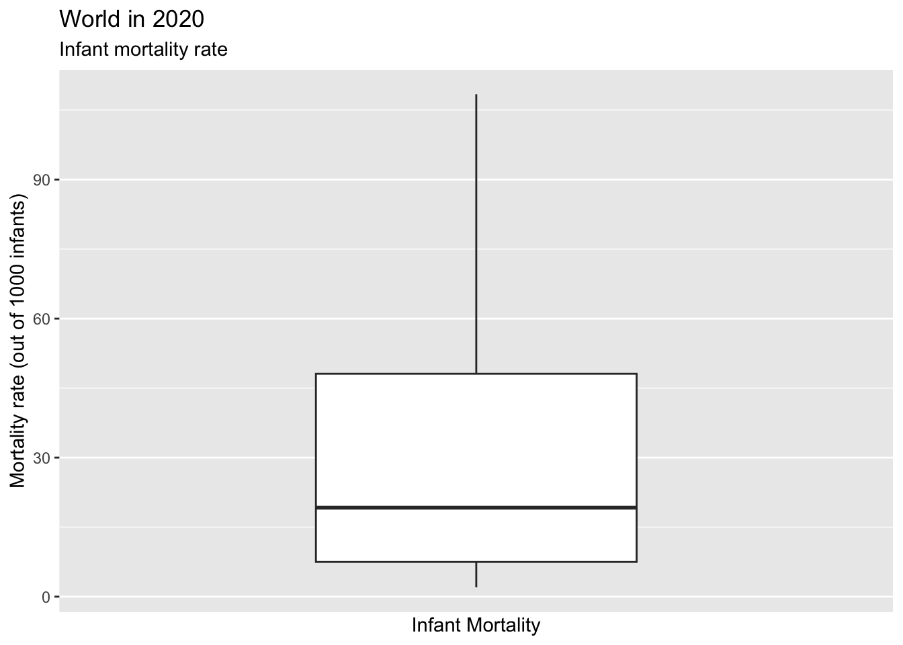

# load the world_in_2010.csv as df
df <- read.csv("data/world_in_2010.csv")6 Association Between Two Numerical Variables
Today, we are going to look at the association between infant mortality rate and female life expectancy. As you might have guessed already, both variables are highly correlated: we will see that the higher the female life expectancy, the lower the infant mortality rate.
We are going to use World in 2010 dataset which can be downloaded from the module Blackboard page.
Next, let’s explore the variables of interest.
# check all variablenames
names(df)
#> [1] "COWcode" "Country_Code"
#> [3] "Country_Name" "WB_Region"
#> [5] "WB_IncomeGroup" "Population_total"
#> [7] "Urban_pop" "GDP_pc_PPP"
#> [9] "Infant_Mortality_Rate" "Life_exp_female"
#> [11] "Life_exp_male" "HIV"
#> [13] "Literacy_rate_female" "Literacy_rate_all"
#> [15] "Current_acc_bal_USD" "Current_acc_bal_perc_of_GDP"
#> [17] "ODA_USD" "ODA_perc_of_GNI"
#> [19] "Natural_resources_rents_perc_of_GDP" "FDI_net_inflows_perc_of_GDP"
#> [21] "Net_migration_2008_2012" "GINI_index_WB_estimate"
#> [23] "Inc_share_by_highest_10per" "Unemployment_rate"
#> [25] "Surface_area_sq_km" "v2x_polyarchy"
#> [27] "democracy" "v2x_libdem"
#> [29] "v2x_egaldem" "Geographical_Region"
#> [31] "UN_vote_PctAgreeUS" "UN_vote_PctAgreeRUSSIA"
#> [33] "UN_vote_PctAgreeBrazil" "UN_vote_PctAgreeChina"
#> [35] "UN_vote_PctAgreeIndia" "UN_vote_PctAgreeIsrael"
#> [37] "milex" "milper"
#> [39] "cinc" "CivilConflict"
#> [41] "Corruptions_Perspectives_Index" "Turnout"Variables are named intuitively: Infant_Mortality_Rate and Life_exp_female. Let’s explore them one by one. Both variables are numerical (ratio-level).
6.1 Numerical and visual summary of female life expectancy
Female life expectancy is measured in calendar years and straightforward to understand.
Start with a numerical summary.
Reveal the code
# numerical summary of Life_exp_female (Female Life Expectancy)
summary(df$Life_exp_female)
#> Min. 1st Qu. Median Mean 3rd Qu. Max.
#> 48.88 64.41 74.91 71.94 78.73 86.30It looks like there is no missing data points in Life_exp_female. We know this because summary also reports how many data points are missing when there missingness.
The lowest female life expectancy in 2010 was 48.88 years, which is dismally low. The highest female life expectancy is 86.30. You might be curious to see which countries are these.
It is also a good idea to check and report the standard deviation.
Find the standard deviation.
Reveal the code
# standard deviation of Female Life Expectancy:
sd(df$Life_exp_female, na.rm = T)
#> [1] 9.353926Let’s also visually explore the data. Histogram and boxplot are both nice ways to visually summarize data. We are going to use ggplot for this purpose, so it is a good idea to load it as well (alternatively, load whole tidyverse).
# load ggplot
library(ggplot2)Continue with a histogram. Try to do it yourself (give yourself at least a few minutes).
Reveal the code
# histogram:
ggplot(data = df, mapping = aes(x = Life_exp_female)) +
geom_histogram(binwidth = 2.5) +
labs(title = "World in 2010",
subtitle = "Female Life Expectancy",
x = "Female Life Expectancy (in years)",
y = "Number of Countries")Next, let’s also do a boxplot. Again, try to do it yourself.
Reveal the code
ggplot(data = df, mapping = aes(y = Life_exp_male, x = "")) +
geom_boxplot() +
scale_x_discrete( ) +
labs(title = "World in 2010",
x = "Female Life Expectancy in 2010",
y = "Female Life Expectancy (in years)")6.2 Numerical and visual summary of infant mortality
Infant Mortality Rate is commonly measured as the number of infant deaths out of 1000 births. Infant is defined as a baby younger than one-year old.
Again, let’s start with a numerical summary.
Reveal the code
# Summary
summary(df$Infant_Mortality_Rate)
#> Min. 1st Qu. Median Mean 3rd Qu. Max. NA's
#> 2.00 7.50 19.20 29.25 48.10 108.40 1The lowest infant mortality rate is 2 infants out of 1000 whereas the highest is 108.40. There is a huge difference between infant mortality rate across countries. This is visible from the range and the inter-quartile range.
Note that the information on the infant mortality rate of one countriy is not available. We know this thanks to summary output above.
Find the country with missing infant mortality rate.
Find the countries with the lowest and highest infant mortality rates.
Find the countries with the lowest and highest infant mortality rates.
We mentioned that infant mortality rate has high dispersion. We should calculate and report the standard deviation as well.
Reveal the code
# standard deviation of infant mortality rate
sd(df$Infant_Mortality_Rate, na.rm = T)
#> [1] 25.89212Next, let’s continue with a histogram. We should expect to receive a warning message saying that missing observations are removed.
Reveal the code
# Histogram
ggplot(df, aes(x = Infant_Mortality_Rate)) +
geom_histogram(binwidth = 3) +
labs(title = "World in 2020",
subtitle = "Infant mortality rate",
x = "Infant Mortality",
y = "Mortality rate (out of 1000 infants)")
#> Warning: Removed 1 rows containing non-finite values (`stat_bin()`).Continue with a boxplot.
Reveal the code
# box plot
ggplot(df, aes(y = Infant_Mortality_Rate)) +
geom_boxplot() +
scale_x_discrete() +
labs(title = "World in 2020",
subtitle = "Infant mortality rate",
y = "Mortality rate (out of 1000 infants)",
x = "Infant Mortality"
)
#> Warning: Removed 1 rows containing non-finite values (`stat_boxplot()`).
6.3 Association between Infant Mortality and Female Life Expectancy
It is time to explore the association between the two variables. As we have mentioned earlier, a scatter plot is a good place to start. I am not analysing a causal relationship (recall the causality lecture!). Instead, I am just looking at a possible relationship. It is quite obvious that both the female life expectancy and the infant mortality rate is affected by some other underlying factors, such as the quality and accessibility of healthcare in the country, hygiene standarts, general economic development.
Although we expect to see a strong association between the two variables, we do not think that it is a causal relationship. We are not trying to explain one variable with the other. Therefore, it does not really matter to which access we put our variable of interest.
# Scatterplot
ggplot(df, aes(x = Infant_Mortality_Rate, y = Life_exp_female)) +
geom_point() +
labs(title = "World in 2010",
x = "Infant Mortality Rate",
y = "Female Life Expectancy")
#> Warning: Removed 1 rows containing missing values (`geom_point()`).Do you see a pattern?
Next week, we will start working on regression, but for a sneak peek, let’s draw the OLS regression line.
# add regression line to the scatter plot
ggplot(df, aes(x = Infant_Mortality_Rate, y = Life_exp_female)) +
geom_point() +
geom_smooth(method = "lm") +
labs(title = "World in 2010",
x = "Infant Mortality Rate",
y = "Female Life Expectancy")6.4 Correlation Coefficient
Next, we are going to calculate the Pearson correlation coefficient between the two variables.
Recall that Pearson correlation coefficient is a measure of linear relationship between two numerical variables (lab lecture on 13 November 2023). It can take values between -1 and 1. It is a standardized version of co-variance, which creates the boundries of -1 and 1.
Before revisiting the details, let’s learn how to ask R to calculate it for us. It is pretty straightforward.
# correlation coefficient between two variables
cor(df$Life_exp_female, df$Infant_Mortality_Rate, use = "pairwise")
#> [1] -0.9420862This figure indicates a very strong negative linear relationship between Life_exp_female and Infant_Mortality_Rate.
We need to add the option use = "pairwise" because there is at least one missing value. Pairwise here is a shorthand for ‘pairwise complete observations’.
6.5 Correlation Matrix
We might be interested in exploring correlation coefficient of several variables. For example, Life_exp_male is life expectancy of males. It is likely that there is a strong correlated between Life_exp_male and Life_exp_female. Similarly, HIV (the rate of HIV in the country), and GDP_pc_PPP (GDP per capita in Purchasing Power Parity) are also correlated with life expectancy outcomes. Finally, v2x_polyarchy is the VDem’s Electoral Democracy Index, which is a measurement for the level of democracy in the country. All these variables are numerical, thus it is possible to calculate the correlation coefficient.
We could calculate each pairs correlation coefficient.
# correlation of Life_exp_male and Life_exp_female
cor(df$Life_exp_female, df$Life_exp_male)
#> [1] 0.9741536However, this would become burdensome quite quickly as the number of variables increase. Instead, we can create a correlation matrix.
cor() can take a data frame or matrix but all of the variables should be numerical. If we try to put df into cor(), we will get an error message because of string and nominal variables.
cor(df)
#> Error in cor(df): 'x' must be numericTherefore, I need to select a bunch of numerical variables. You could do this in base R, but the select() function in tidyverse is a much better choice. Let’s load the tidyverse.
library(tidyverse)
#> ── Attaching core tidyverse packages ──────────────────────── tidyverse 2.0.0 ──
#> ✔ dplyr 1.1.0 ✔ readr 2.1.4
#> ✔ forcats 1.0.0 ✔ stringr 1.5.0
#> ✔ lubridate 1.9.2 ✔ tibble 3.1.8
#> ✔ purrr 1.0.2 ✔ tidyr 1.3.0
#> ── Conflicts ────────────────────────────────────────── tidyverse_conflicts() ──
#> ✖ dplyr::filter() masks stats::filter()
#> ✖ dplyr::lag() masks stats::lag()
#> ℹ Use the conflicted package (<http://conflicted.r-lib.org/>) to force all conflicts to become errorsAlso, I am going to use pipes (|>) to make it easier. Finally, I am going to round the output to three decimal points to keep things easier to read.
df |>
select(Life_exp_female, Life_exp_male,
Infant_Mortality_Rate, HIV, GDP_pc_PPP,
v2x_polyarchy, UN_vote_PctAgreeUS,
UN_vote_PctAgreeRUSSIA,
UN_vote_PctAgreeChina) |> # selecting some variables of interest
cor(use = "pairwise") |> # correlation (input comes from the pipe)
round(3) # rounding to three decimal points
#> Life_exp_female Life_exp_male Infant_Mortality_Rate
#> Life_exp_female 1.000 0.974 -0.942
#> Life_exp_male 0.974 1.000 -0.901
#> Infant_Mortality_Rate -0.942 -0.901 1.000
#> HIV -0.511 -0.539 0.351
#> GDP_pc_PPP 0.610 0.643 -0.580
#> v2x_polyarchy 0.476 0.466 -0.429
#> UN_vote_PctAgreeUS 0.446 0.446 -0.402
#> UN_vote_PctAgreeRUSSIA -0.356 -0.398 0.306
#> UN_vote_PctAgreeChina -0.540 -0.519 0.506
#> HIV GDP_pc_PPP v2x_polyarchy UN_vote_PctAgreeUS
#> Life_exp_female -0.511 0.610 0.476 0.446
#> Life_exp_male -0.539 0.643 0.466 0.446
#> Infant_Mortality_Rate 0.351 -0.580 -0.429 -0.402
#> HIV 1.000 -0.191 -0.112 -0.172
#> GDP_pc_PPP -0.191 1.000 0.295 0.456
#> v2x_polyarchy -0.112 0.295 1.000 0.523
#> UN_vote_PctAgreeUS -0.172 0.456 0.523 1.000
#> UN_vote_PctAgreeRUSSIA 0.112 -0.316 -0.487 -0.654
#> UN_vote_PctAgreeChina 0.229 -0.405 -0.624 -0.871
#> UN_vote_PctAgreeRUSSIA UN_vote_PctAgreeChina
#> Life_exp_female -0.356 -0.540
#> Life_exp_male -0.398 -0.519
#> Infant_Mortality_Rate 0.306 0.506
#> HIV 0.112 0.229
#> GDP_pc_PPP -0.316 -0.405
#> v2x_polyarchy -0.487 -0.624
#> UN_vote_PctAgreeUS -0.654 -0.871
#> UN_vote_PctAgreeRUSSIA 1.000 0.752
#> UN_vote_PctAgreeChina 0.752 1.000What do you see? Anything surprising? Anything expected? Try to interpret this output.
Alternative (Base R and no pipe)
In case you are confused with this code, this is the alternative without the pipe and tidyverse.
# variable names:
variables_of_interest <- c("Life_exp_female",
"Life_exp_male",
"Infant_Mortality_Rate",
"HIV",
"GDP_pc_PPP",
"v2x_polyarchy",
"UN_vote_PctAgreeUS",
"UN_vote_PctAgreeRUSSIA",
"UN_vote_PctAgreeChina")
# smaller data frame with only variables of interest:
df_light <- df[, variables_of_interest]
# correlation matrix with three decimal points
round(cor(df_light, use = "pairwise"), 3)6.6 Exercises
6.6.1 Hours of study and marks
Your task is to calculate the correlation between study hours and marks as shown below.
| X (Study Hour) | Y (Mark) |
|---|---|
| 1 | 55 |
| 1 | 45 |
| 1 | 52 |
| 1 | 48 |
| 3 | 61 |
| 3 | 59 |
| 3 | 65 |
| 3 | 55 |
First, create a data frame with appropriate variable names.
Reveal the code
# data frame for exercise 1 (ex1):
ex1 <- data.frame(study_hour = c(rep(1,4), rep(3,4)),
mark = c(55, 45, 52, 48, 61, 59, 65, 55)
)Next, draw a scatterplot like the one below.
Reveal the code
ggplot(ex1, aes(x = study_hour, y = mark)) +
geom_point() +
labs(title = "Study Hour and Marks Received",
x = "Hours of Study",
y = "Mark") Calculate the correlation coefficient.
Reveal the code
cor(ex1)
#> study_hour mark
#> study_hour 1.0000000 0.8032193
#> mark 0.8032193 1.00000006.6.2 Challenge
Calculate the correlation co-efficient ‘by hand’. With by hand, I mean not using functions such as cor(), var(), cov(). Instead, you can calculate all the steps like we did in the lecture using only simple R code. The goal is to follow the formula.
Let’s remind ourselves the formulas. Starting with correlation coefficient:
\[cor(X,Y) = \frac{cov(X,Y)}{\sigma_X*\sigma_Y} \] \(cov(X,Y)\) stands for covariance between X and Y, which can be calculated with the following formula:
\[cov(X,Y) = \frac{\sum_{i=1}^{n}{(x_i -\bar{x}) * (y_i - \bar{y})}}{n-1}\] Also, recall the formula for standard deviation (\(\sigma\)):
\[\sigma_X = var(X)^2 = \sqrt{\frac{\sum{(x_i - \bar{x})^2}}{n-1}}\] You can use functions such as mean(), length(), sqrt().
Make sure to check your final result and mid-steps using var(), cov(), and cor().
Note
This is an exercise to understand how variance, covariance and correlation is calculated. In reality, you wouldn’t calculate it in such a way, but tell R to calculate it for you.